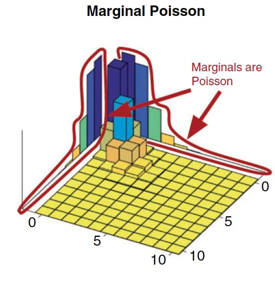
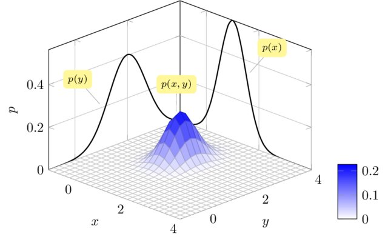
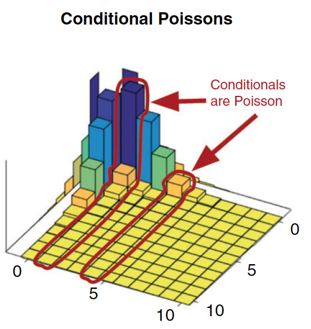
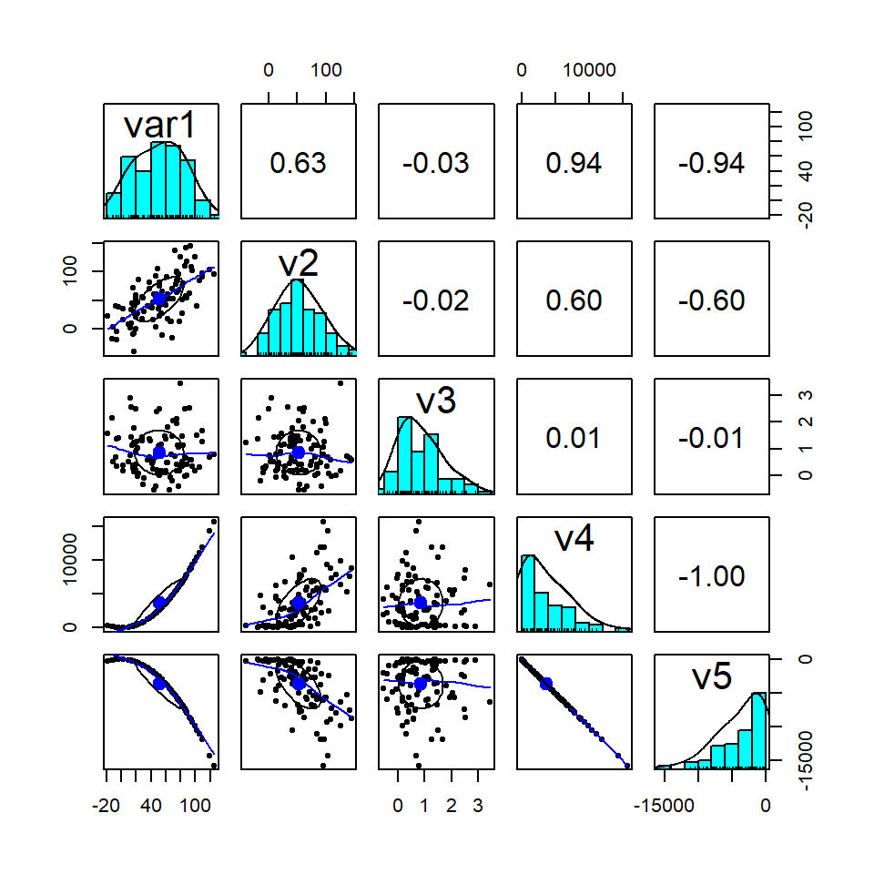

8 Variáveis Aleatórias Multidimensionais
Conceitos Inciciais
8.1 Introdução
Até o momento nos interessou observar apenas uma característica de um experimento. Por exemplo, a altura média dos alunos do curso de estatística. Podemos também estar interessados em mais uma característica adicional, como o peso dos alunos do curso de estatística.
Portanto, queremos observar duas características de forma simultânea dos alunos: altura e peso. Ou seja, duas características simultaneamente do mesmo experimento \(\epsilon\).
Considere o experimento de jogar dois dados não viciados de forma simultânea. Define-se duas variáveis aleatórias: \(X\) o número que aparece no dado 1 e \(Y\) o número que aparece no dado 2. Assim, temos o seguinte espaço amostral com 36 elementos (6x6):
\[\Omega = { \{(1,1),(1,2),(1,3),...,(6,6)\} }\]
Como o dado é não viciado cada evento (x,y) tem a mesma probabilidade de ocorrência de 1/36. Assim, a função de probabilidade bivariada é:
\[p(x_{i},y_{j})=P(X=x_{i},Y=y_{j})=1/36 \]
para \(i=1,...,6\) e \(j=1,...6\).
Assim como no caso unidimensional pode-se construir um histograma. Com base no exemplo acima, podemos fazer o seguinte histograma tridimensional para o par de dados \(X\) e \(Y\), ou seja, a distribuição conjunta de \((X,Y)\):
Com base nessa ideia podemos fazer a seguinte definição:
Agora possuímos não mais um espaço unidimensaional \(R_{x}\) como anteriormente visto, mas sim bidimensional, ou seja, o contradomínio da variável aleatória será \(R_{xy}\) e cada resultado \(X = X(\omega)\) e \(Y = Y(\omega)\) pode ser representado como um ponto \((x,y)\) no plano euclidiano. Podemos dividir os resultado de um experimento em dois tipos, os discretos e os contínuos. Vejamos abaixo esses dois tipos de resultados.
8.2 Distribuição de Probabilidade
8.2.1 Variáveis Aleatórias Discretas
São variáveis que conseguimos colocar em lista, seja ela finita ou infinita. Assim, o vetor (X,Y) será uma variável aleatória discreta bidimensional ou vetor aleatório bidimensional se os valores possíveis puderem ser representados por \((x_{i},y_{i})\), \(i=1,...,n,...\); e \(j=1,2,...,m,...\)
Como no caso unidimensional tem-se, podemos definir a distribuição de probabilidade conjunta de \((X,Y)\)
Com base na definição anterior podemos definir agora o que seria a função distribuição conjunto, ou seja:
Para fixarmos as definições apresentadas acimas, e colocarmos os conceitos em prática, vamos realizar dois exemplos.
Vejamos agora alguns gráficos de variáveis aleaórias bidimensionais:
BINOMIAL:
Considere a variável aleatória \((X,Y)\) com distribuição binomial e a probabilidade de sucesso de \(X\) é igual a 0.75 e de \(Y\) igual a 0.25 com 10 rodadas:

POISSON
Considere a variável aleatória \((X,Y)\) com distribuição de poisson e o valor esperado de \(X\) igual a 7, de \(Y\) igual a 4 e a covariância é 3 (a frente veremos esse conceito):

8.2.2 Variáveis Aleatórias Contínuas
São variáveis que não conseguimos listar, pois existem infinitos valores entre dois pontos. Assim,o vetor \((X,Y)\) será uma variável aleatória contínua se puder tomar todos os valores em algum conjunto não enumerável no plano euclediano
Importante notar que \(f(x,y)\) não representa a probabilidade. Assim para um evento B em \(R_{xy}\):
\[P(B)=P\{ [X(\omega),Y(\omega)] \in B \}= P\{\omega | [X(\omega),Y(\omega)] \in B \}\]
Para o caso discreto:
\[P(B)=\sum \sum_{B} p(x_{i},y_{j})\]
Para o caso contínuo:
\[P(B)=\iint_{B} f(x,y)dxdy\]
Reinterpretando o exposto acima sobre o evento B, como no caso unidimensional, onde a área sobre a função densidade de probabilidade representa a probabilidade, no caso bidimensional o volume sob a função densidade de probabilidade conjunta representa a probabilidade.
Assim, uma probabilidade \(P(a \leq X \leq b, c\leq Y \leq d)\) é calculada como:
\[P(a \leq X \leq b, c\leq Y \leq d) = \int_{c}^{d}\int_{a}^{b} f(x,y)dxdy\]
CautionRESPOSTA
Resposta a:

Resposta b:
\[P(0 \leq X \leq 0.2,0 \leq Y \leq 0.4)= \int_{0}^{0.4}\int_{0}^{0.2}f(x,y)dxdy\] \[=\int_{0}^{0.4}\int_{0}^{0.2}1dxdy=\int_{0}^{0.4}\bigg(\int_{0}^{0.2}1dx\bigg)dy\] \[=\int_{0}^{0.4}\Big(x\Big|_{0}^{0.2}\Big)dy =(0.2-0)\int_{0}^{0.4}dy = (0.2-0).\Big(y\Big|_{0}^{0.4}\Big)\] \[=(0.2-0)(0.4-0)=0.08\] \[P(0 \leq X \leq 0.2,0 \leq Y \leq 0.4)=0.08\]
Vejamos agora alguns gráficos de variáveis aleaórias bidimensionais:
NORMAL BIVARIADA:
Considere a variável aleatória \((X,Y)\) com distribuição normal bivariada com a esperança de \(X\) igual a 10, de \(Y\) igual a 4, o desvio-padrões iguais a 3 e 2 respectivamente. Aqui consideremaos a correlação de 0.7 (veremos mais a frente esse conceito).

NORMAL BIVARIADA PADRÃO:
Considere a variável aleatória \((X,Y)\) com distribuição normal bivariada padrão, ou seja, a esperança de \(X\) e \(Y\) igual a a 1, o desvio-padrões iguais a 1 e sem covariancia.

8.3 Distribuição Acumulada
Como no caso univariado a distinção entre variável aleatória conjunta contínua e conjunta discreta pode ser feita em termos de sua função distribuição conjunta acumulada.
8.3.1 Variável Aleatória Discreta
Seja X e Y duas variáveis aleatórias discretas com função distribuição conjunta \(F(x,y)\), a função distribuição conjunta acumulada de X e Y será:
\[F(x,y)=\sum_{f1=- \infty }^{x} \sum_{f2=- \infty }^{y}p(t_{1},t_{2})\]
Retomando os exemplos anteriores temos as seguintes funções de distribuição conjunta acumuladas discretas:

BINOMIAL:
Considere a variável aleatória \((X,Y)\) com distribuição binomial e a probabilidade de sucesso de \(X\) é igual a 0.75 e de \(Y\) igual a 0.25 com 10 rodadas, sua função distribuição acumulada será:

POISSON
Considere a variável aleatória \((X,Y)\) com distribuição de poisson e o valor esperado de \(X\) igual a 7, de \(Y\) igual a 4 e a covariância é 3 (a frente veremos esse conceito). Assim a função distribuição acumulada será:

8.3.2 Variável Aleatória Contínua
Seja X e Y duas variáveis aleatórias contínuas com função distribuição conjunta \(F(x,y)\). Se existir uma função densidade de probabilidade conjunta \(f(x,y)\) não negativa, assim a função distribuição conjunta acumulada de X e Y será:
\[F(x,y) = \int_{-\infty}^{x}\int_{- \infty}^{y} f(t_{1},t_{2})dt_{1}dt_{2} \ para \ -\infty < x_{i} < \infty \ e \ -\infty < y_{i} < \infty\]
Vejamos agora alguns gráficos de variáveis aleaórias bidimensionais:
NORMAL BIVARIADA:
Considere a variável aleatória \((X,Y)\) com distribuição normal bivariada com a esperança de \(X\) igual a 10, de \(Y\) igual a 4, o desvio-padrões iguais a 3 e 2 respectivamente. Aqui consideremaos a correlação de 0.7 (veremos mais a frente esse conceito). Assim a função distribuição acumulada conjunta terá o seguinte formato:

NORMAL BIVARIADA PADRÃO: Considere a variável aleatória \((X,Y)\) com distribuição normal bivariada padrão, ou seja, a esperança de \(X\) e \(Y\) igual a a 1, o desvio-padrões iguais a 1 e sem covariância. Assim a função distribuição acumulada conjunta terá o seguinte formato:

8.4 Distribuição de Probabilidade Marginal e Condicional
8.4.1 Distribuição de Probabilidade Marginal
Dada a variável bidimensional \((X,Y)\) podemos estar interessados em X ou Y individualmente. Agora não mais queremos entender como se distribui conjuntamente renda e consumo. Com base na distribuição conjunta, quero saber somente como a renda distribui, por exemplo.
8.4.1.1 Para o caso discreto
Para o caso discreto, temos a seguinte distribuição marginal de X:
\[p(x_{i})=P(X=x_{i})=P(X=x_i, Y=y_i \ ou \ X=x_i,Y=y_2 ....)\]
\[p(x_i)=\sum_j p(x_i,y_j)\]
Onde p é a função distribuição marginal de \(X\). Podemos pensar em \(Y\) de forma análoga.
A intuição aqui é que se queremos a marginal de \(X\) temos que empilhar na direção de \(Y\), assim o eixo \(y\) irá sumir. Vejamos graficamente.
Vejamos um exemplo extraído de Inouye,D.I. et al.(2017)1:

Veja que se quisermos a distribuiçao marginal de \(X\), apresentada a esquerda, temos que somar as barras ou empilha-las na direção de \(Y\).
8.4.1.2 Para o caso continuo
O caso contínuo é similar ao discreto. No contínuo, a função densidade marginal de X será:
\[g(x)=\int_{-\infty}^{\infty}f(x,y)dy\]
E a função densidade marginal de y será:
\[h(y)=\int_{-\infty}^{\infty}f(x,y)dx\]
Aqui temos que mostrar uma figura para ilustrar.
Vejamos um exemplo extraído de Selvan, R.(2015) 2:

Veja que se quisermos a distribuiçao marginal de \(X\), apresentada ao fundo, temos que somar as barras ou empilha-las na direção de \(Y\).
8.4.2 Distribuição de Probabilidade Condicional
Na distribuição maringao, tinhamos a distribuição conjunta entre renda e consumo e estavamos interessados somente na renda. Agora estamos querendo saber qual a distribuição da renda para certa faixa de consumo, ou o contrário, qual a distribuição do consumo para dada faixa de renda.
Para o caso discreto:
Para variáveis discretas temos o seguinte:
\[P(x_i|y_j)=P(X=x_i|Y=y_j)\]
\[P(x_i|y_j)= \frac{P(x_i,y_j)}{q(y_{j})}\]
Note que \(P(x_i|y_j)\geq 0\) e \(\sum_iP(x_i|y_j)=1\)
Vejamos um exemplo extraído de Inouye,D.I. et al.(2017)3:

Veja que se quisermos a distribuição condicional de \(X\) dado um certo valor de \(Y\), por exemplo, \(Y=2\).Temos que considerar as barras marcadas e repondera-las pela chance de \(Y=2\) acontecer. Ou seja, agora \(Y=2\) será o total.
8.4.2.1 Para o caso contínuo
Para o caso contínuo a f.d.p. de \(X\) condicionada a um dado \(Y=y\) é:
\[g(x|y)= \frac{f(x,y)}{h(y)}\]
De forma análoga para \(Y\):
\[h(y|x)= \frac{f(x,y)}{g(x)}\]
Note que \(g(x|y)\geq 0\) e
\[\int_{-\infty}^{\infty}g(x|y)dx=\int_{-\infty}^{\infty} \frac {f(x,y)}{h(y)}dx=\frac{h(y)}{h(y)}=1\]
Inserir um gráfico e falar da intuição.
Vejamos um exemplo extraído de Neuper,M. e Ehret,U. (2019)4:

Veja que se quisermos a distribuição condicional de \(X\) dado um certo valor de \(Y\), por exemplo, \(Y=-2\).Temos que considerar a linha marcada e novamente reponder todos os elementos pela chance de \(Y=-2\) acontecer. Ou seja, agora \(Y=-2\) será o total.
8.4.3 Variáveis Aleatórias Independentes
Independencia está ligado ao conceito de informação e quanto essa informação recebida muda sua opinião do que irá acontecer com o caso sobre estudo. Podemos dar uma informação sobre renda e perguntarmos sobre o consumo desse parte da população. Quando os resultados de \(X\) influenciam o resultado de \(Y\) dizemos que as variáveis são dependentes. Caso a informação sobre \(X\) não afeta de meneira nenhuma os resultados de \(Y\), dizemos que são independentes.
8.4.3.1 Para o caso discreto
8.4.3.2 Para caso Contínuo
Com base nessas definições podemos agora apresentar o seguinte teorema que conecta o que viram em probabilidade com variáveis aleatórias multidimesionais.
8.5 Coeficiente de Correlação
Até o momento medimos a \(E(X)\) e a \(Var(X)\), ou seja, uma medida de posição e de variabilidade em relação a \(R_x\), Entretanto, quando temos um vetor bidimensional \((X,Y)\) uma outra medida surge, a qual tenta media o “grau de associação” linear entre X e Y.
Um termo muito importante surge na expressão acima, a Covariância. Ela mede a variabilidade conjunta de uma variável aleátoria multidimensional. Como no caso da variância, ela sobre do efeito das escalas de medidas. Por isso que anteriormente dividimos pelos desvio-padrões. Lembre-se que já usamos esse artifício anteriormente para nos livrar da unidade de medida.
Novamente, a correlação mede o GRAU DE ASSOCIAÇÃO LINEAR. Vejamos algumas Propriedades da Correlação:
Considerando o teorema acima, e sabendo que as variáveis são independentes, então \(\rho_{X,Y}=0\)
IMPORTANTE: Note que Independência \(\Rightarrow \rho_{X,Y}=0\) mas não é verdade que \(\rho_{X,Y}=0 \Rightarrow Independência\)
Assim, com base no exposto, temos que o coeficiente de correlação é uma medida do grau de linearidade entre X e Y. Dessa forma, \(\rho\) próximo a 1 e -1 indicam alto grau de linearidade e \(\rho\) próximo a zero indica ausência de relação linear - mas não diz nada sobre relações não-lineares.
Aqui, apresensemtamos um correlograma com base em variáveis simuladas:

Vamos começar pelas variáveis v5 e v4, elas tem um comportantamento conjunto totalmente linear, ou seja, saber de v4 te informa corretmente o que acontecerá com v5. Aqui quando v5 sobe, v4 desce. Vejamos agora as variáveis v3 e v2, observe como os dados estão disperso, sem nenhum padrão de comportamento linear. Nesse caso a correlação é próxima a zero (-0.0135). Perceba que a relação não-linear entre v1 e v4 e v1 e v5, faz com que a correlação seja menor que 1 e não perfeita. Já as variáveis v1 e v2 mostram comportamento conjunto positivo, mas não perfeito, reativamente disperso. Quando v1 sobe, v2 também sobe, entretanto não cosneguimos prever esse comportamento perfeitamente.
8.6 Links
🎞️ SLIDES
Arquivos em HTML (zip) das aulas.
💻 SCRIPT R
Códigos utilizados nas aulas em R.
🐍 SCRIPT PYTHON
Códigos utilizados nas aulas em Python.
8.7 Exercícios
Exercício 1 (ANPEC 2022 — Questão 04)
Tema: V.A. multidimensional contínua: densidade conjunta e esperança de combinação linear.
Seja a seguinte função de distribuição \[f(x,y)= \begin{cases} xy, & 0\le x\le 4,\ 1\le y\le 2,\\ 0, & \text{c.c.} \end{cases}\]
Encontre o valor esperado de \(X+3Y\).
Interpretação econômica pedida: interprete \(X\) e \(Y\) como dois componentes de custo/receita e \(X+3Y\) como um índice econômico ponderado.
Exercício 2 (Morettin & Bussab, Cap. 8)
Tema: V.A. bidimensional discreta: distribuição conjunta, marginais, independência e covariância.
Para que o item sobre distribuição conjunta faça sentido, considere dois lançamentos de uma moeda perfeita e um lançamento de um dado. Defina \[X=\text{número de caras nos dois lançamentos da moeda}, \qquad Y=\text{face do dado}.\]
Determine o espaço amostral correspondente a esse experimento.
Obtenha a tabela da distribuição conjunta de \((X,Y)\).
Verifique se \(X\) e \(Y\) são independentes.
Calcule:
\(P(X=1)\)
\(P(X\le 1)\)
\(P(X=2,Y=3)\)
\(P(X=0,Y\ge 1)\)
Calcule \(\operatorname{Cov}(X,Y)\) e interprete.
Interpretação econômica pedida: use \(X\) como “sinal” (choque discreto) e \(Y\) como “estado” (regime) e discuta independência.
Exercício 3 (Morettin & Bussab, Cap. 8)
Tema: V.A. bidimensional contínua: marginais, probabilidade em região e esperança condicional.
Suponha que as v.a. \(X\) e \(Y\) tenham f.d.p. definida por \[f(x,y)= \begin{cases} e^{-(x+y)}, & x>0,\ y>0,\\ 0, & \text{nos demais casos.} \end{cases}\]
Calcule as f.d.p. marginais de \(X\) e \(Y\).
Calcule \(P(0<X<1,\ 1<Y<2)\).
Calcule as esperanças condicionais \(E(Y\mid X=x)\) e \(E(X\mid Y=y)\).
Interpretação econômica pedida: interprete \(X\) e \(Y\) como durações/tempos de dois processos econômicos e discuta o que significa independência.
Exercício 4 (Morettin & Bussab, Cap. 8)
Tema: V.A. bidimensional contínua: densidades marginais e condicionais.
Calcule as densidades marginais e condicionais para a v.a. \((X,Y)\), com f.d.p. dada por \[f(x,y)=\frac{1}{64}(x+y), \qquad 0\le x\le 4,\ 0\le y\le 4.\]
Interpretação econômica pedida: interprete a condicional como a distribuição de \(X\) dado um nível de \(Y\) (por exemplo, risco dado o estado).
Exercício 5 (Morettin & Bussab, Cap. 8)
Tema: V.A. bidimensional contínua: marginais, probabilidade acumulada e condicionais.
As v.a. \(X\) e \(Y\) têm distribuição conjunta dada por \[f(x,y)= \begin{cases} \frac{1}{8}x(x-y), & 0<x<2,\ -x<y<x,\\ 0, & \text{c.c.} \end{cases}\]
Encontre as f.d.p. marginais de \(X\) e \(Y\).
Encontre \(P(X\le 1)\).
Calcule \(f_{X\mid Y}(x\mid y)\) e \(f_{Y\mid X}(y\mid x)\).
Interpretação econômica pedida: destaque como a restrição \(-x<y<x\) cria dependência econômica entre as variáveis.
Exercício 6 (Morettin & Bussab, Cap. 8)
Tema: V.A. bidimensional discreta: distribuição conjunta (com/sem reposição), marginais, independência, média e variância.
Numa urna têm-se cinco tiras de papel, numeradas \(1,3,5,5,7\). Uma tira é sorteada e recolocada na urna; então, uma segunda tira é sorteada. Sejam \(X_1\) e \(X_2\) o primeiro e o segundo números sorteados.
Determine a distribuição conjunta de \(X_1\) e \(X_2\).
Obtenha as distribuições marginais de \(X_1\) e \(X_2\). Elas são independentes?
Encontre a média e a variância de \(X_1\) e \(X_2\).
Como seriam as respostas anteriores se a primeira tira de papel não fosse devolvida à urna antes da segunda extração?
Interpretação econômica pedida: interprete “com reposição” versus “sem reposição” como “choques independentes” versus “restrição de recursos”.
Exercício 7 (Morettin & Bussab, Cap. 8)
Tema: Esperança condicional: Lei das Expectativas Iteradas (LIE).
Prove a igualdade abaixo \[E[E(X\mid Y)] = E(X).\]
Interpretação econômica pedida: interprete como “média agregada = média das médias por grupo (tipo, setor, região)”.
Exercício 8 (Morettin & Bussab, Cap. 8)
Tema: Correlação: cálculo de \(\rho(X,Y)\) a partir de uma densidade conjunta.
Suponha que as v.a. \(X\) e \(Y\) tenham f.d.p. expressa como \[f(x,y)= \begin{cases} e^{-(x+y)}, & x>0,\ y>0,\\ 0, & \text{nos demais casos.} \end{cases}\]
- Calcule \(\rho(X,Y)\).
Interpretação econômica pedida: interprete \(\rho\) como o comovimento linear entre dois choques.
Exercício 9 (Morettin & Bussab, Cap. 8)
Tema: Correlação zero \(\neq\) independência (exemplo discreto).
O exercício a seguir ilustra que \(\rho=0\) não implica independência. Suponha que \((X,Y)\) tenha distribuição conjunta dada pela tabela abaixo.
| \(x=-1\) | \(x=0\) | \(x=1\) | |
|---|---|---|---|
| \(y=-1\) | 1/8 | 1/8 | 1/8 |
| \(y=0\) | 1/8 | 0 | 1/8 |
| \(y=1\) | 1/8 | 1/8 | 1/8 |
Mostre que \(E(XY)=E(X)E(Y)\), donde \(\rho=0\).
Justifique por que \(X\) e \(Y\) não são independentes.
Interpretação econômica pedida: dê um exemplo econômico em que variáveis com correlação zero ainda possam ser dependentes por não linearidade ou por restrições.
Exercício 10 (Morettin & Bussab, Cap. 8)
Tema: Independência, covariância e variância de soma.
Uma moeda perfeita é lançada três vezes. Sejam as variáveis abaixo \[X=\text{número de caras nos dois primeiros lançamentos},\] \[Y=\text{número de caras no terceiro lançamento},\] \[S=\text{número total de caras}.\]
Usando a distribuição conjunta de \((X,Y)\), verifique se \(X\) e \(Y\) são independentes. Qual é a covariância entre elas?
Calcule a média e a variância das três variáveis definidas.
Existe alguma relação entre os parâmetros encontrados em (b)? Por quê?
Interpretação econômica pedida: conecte \(S=X+Y\) à soma de choques (componentes) e à decomposição de risco.
Exercício 11 (Morettin & Bussab, Cap. 8)
Tema: Correlação amostral (Pearson): medida de associação linear em dados.
Depois de um tratamento, seis operários submeteram-se a um teste e, mais tarde, mediu-se a produtividade de cada um. A partir da tabela, calcule o coeficiente de correlação entre nota e produtividade.
| Operário | 1 | 2 | 3 | 4 | 5 | 6 |
|---|---|---|---|---|---|---|
| Teste | 9 | 17 | 20 | 19 | 20 | 23 |
| Produtividade | 22 | 34 | 29 | 33 | 42 | 32 |
Interpretação econômica pedida: interprete o sinal e a magnitude como evidência (ou não) de associação entre qualificação e produtividade.
A review of multivariate distributions for count data derived from the Poisson distribution↩︎
Selvan, R. 2015. Bayesian tracking of multiple point targets using Expectation Maximization↩︎
A review of multivariate distributions for count data derived from the Poisson distribution↩︎
Quantitative precipitation estimation with weather radar using a data- and information-based approach↩︎